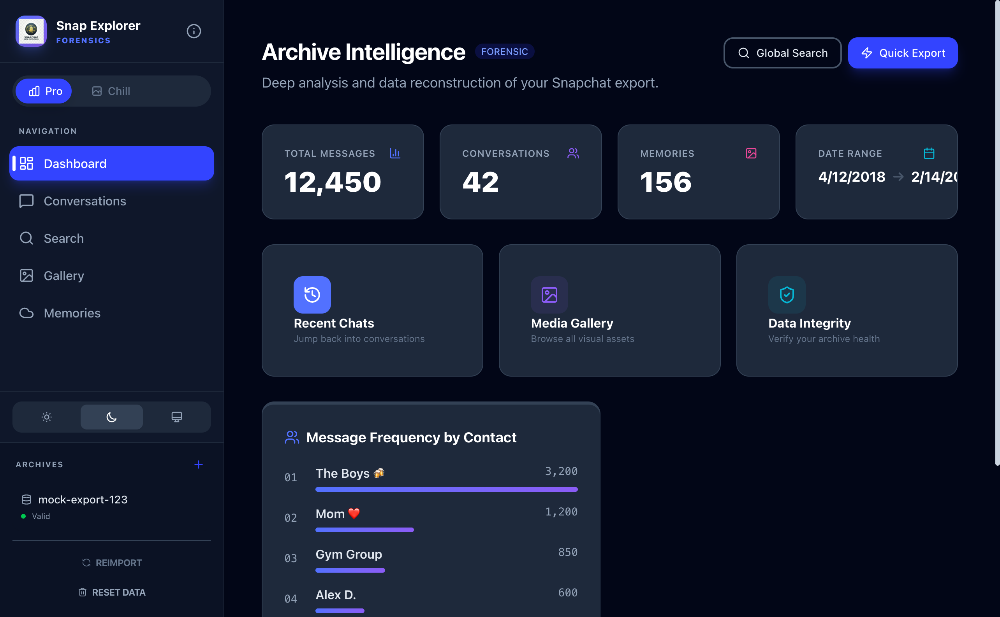
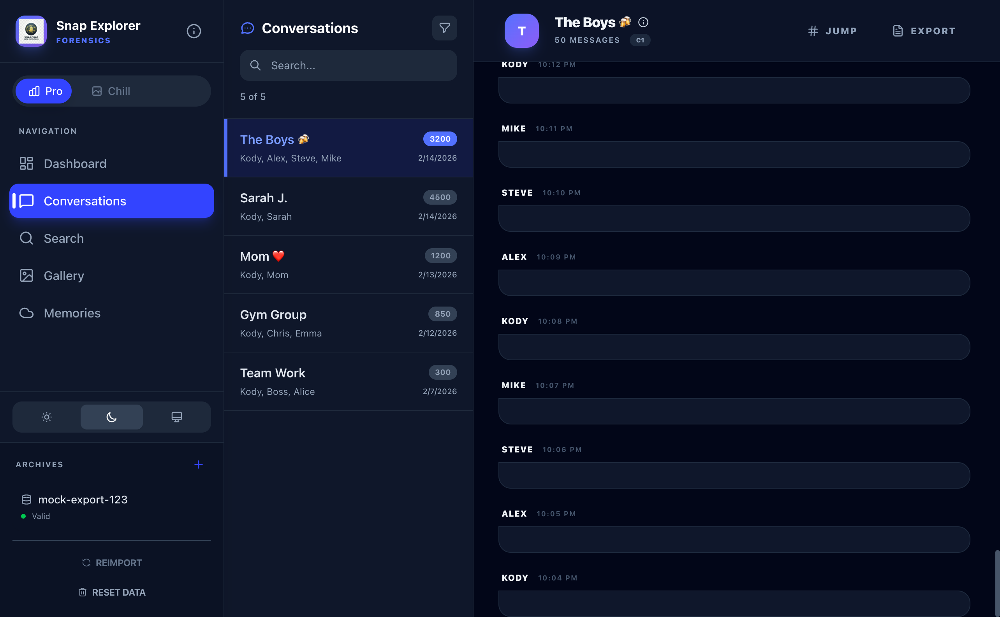
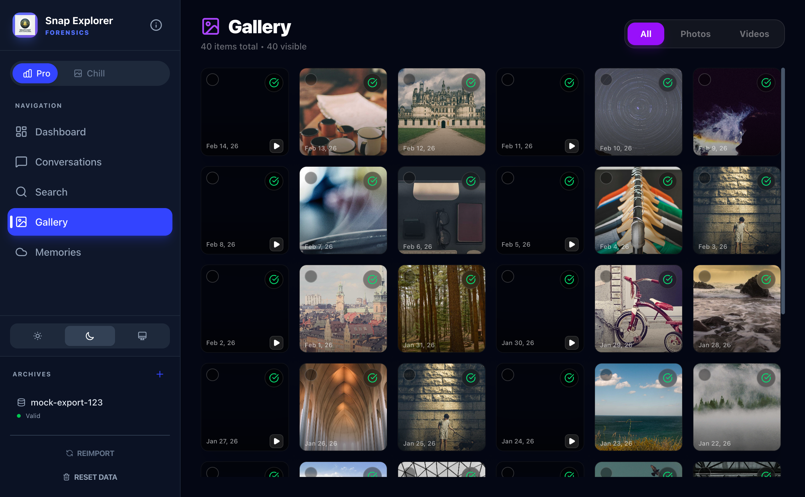
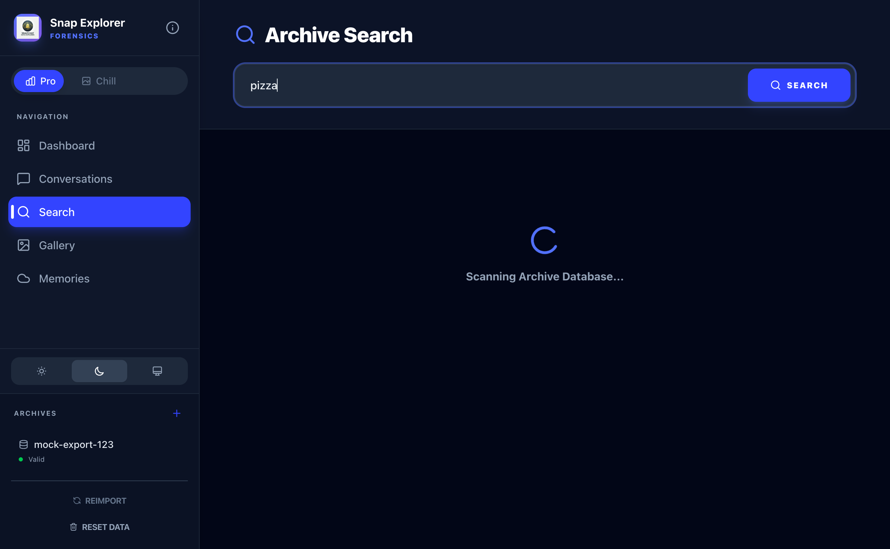
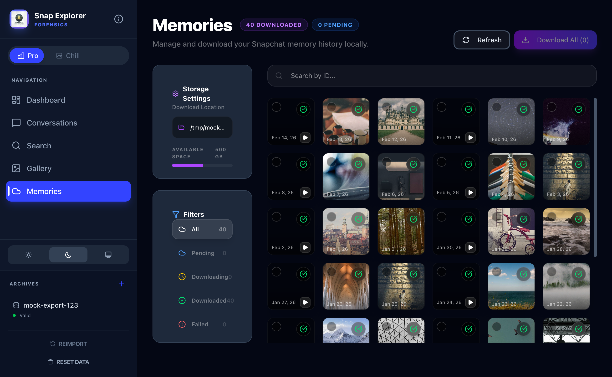
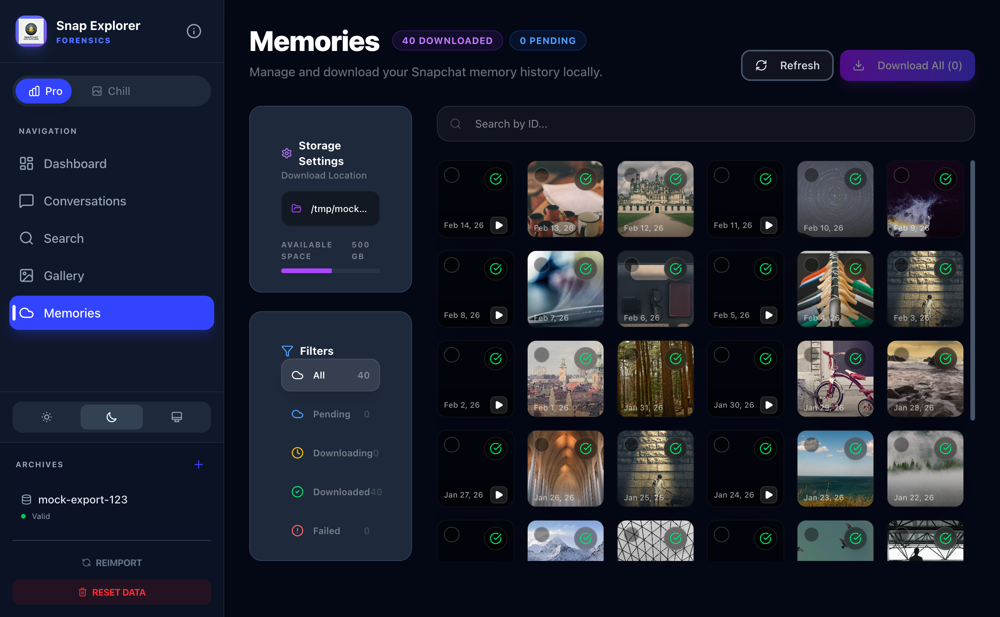

The most powerful local-first forensic tool for Snapchat exports. Reconstruct lost conversations, index your entire media gallery, and search through years of history instantly.
Click on any module to expand and explore the interface details.

Visualize message velocity, top contacts, and archive health in real-time. Forensic-grade data integrity reporting built-in.

Stitches together fragmented JSON and HTML subpages to recreate perfect conversation threads with full media context.

Browse tens of thousands of media files instantly. High-performance virtualization ensures zero lag even with huge archives.

Search through years of history in milliseconds. Find that specific message, link, or media reference across all contacts.

Access your saved Snapchat memories with full metadata. Organized by date and location for easy nostalgic exploration.

Drop your .zip export directly into the app. Our intelligent parser handles multi-part archives and links media automatically.

A focus-first, immersive media environment. Parallax background animations and a minimalist UI for pure nostalgic browsing.
100% open source and developed by AI under human guidance. Join hundreds of users who trust Snap Explorer for their digital forensics.
More than just a viewer. A comprehensive suite for historical data reconstruction.
Merged analysis of HTML subpages and JSON metadata allows us to rebuild conversations exactly as they appeared, including deleted media references and group participants.
Powered by SQLite FTS5 (Full-Text Search), our indexer allows you to search millions of messages in under 100ms. Search by content, sender, or date range.
Built with Rust and Tauri, Snap Explorer is architecturally forbidden from establishing network connections. Your data never leaves the local sandbox.
Download Snap Data Explorer for free. Open source, privacy-first, and 100% local.